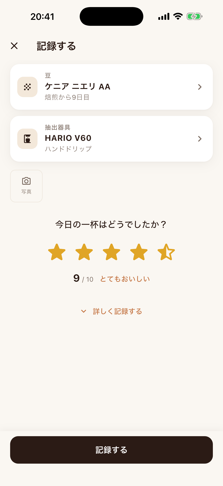

おきに煎り
COFFEE LOG
毎日の一杯を記録して、あなた好みの淹れ方を見つけるアプリです。
App Storeで入手iPhone向け。全機能無料・広告あり。買い切りで広告を非表示にできます。月額料金はありません。

最初の一杯を記録するには
- 豆と器具を選ぶ
使う豆と抽出器具を登録して選びます。次回は、前回使った豆と器具が選ばれます。
- 星で評価する
今日の一杯はどうでしたか？ 星をなぞって、半分の星まで評価できます。
- 「記録する」を押す
湯温や挽き目などは、必要なときに「詳しく記録する」から追加できます。
アカウント登録は不要。豆や器具を準備したあとは、評価して保存するだけでも続けられます。
よくある質問
記録はどこに保存されますか？
お使いの iPhone の中と、あなた自身の iCloud に保存されます（設定の「iCloud で同期」がオンのとき）。開発者のサーバーには送信されず、開発者が中身を見ることもできません。アカウント登録も不要です。
機種変更するときは？
「iCloud で同期」がオンなら、新しい iPhone に同じ Apple ID でサインインしてアプリを入れるだけで、記録と写真が戻ります。
広告を消したい
設定 ＞「広告なしで使う」から、一度の購入（買い切り）で広告を非表示にできます。毎月の支払いはありません。
購入したのに広告が表示されます
設定 ＞「購入を復元」をお試しください。購入時と同じ Apple ID でサインインしている必要があります。
星をタップしても保存されません
星で評価をつけたあと、画面下の「記録する」を押すと保存されます。豆や器具が選ばれていないときは、ボタンに足りない項目が表示されます。
「おいしかった条件」が表示されません
湯温や挽き目などの詳しい記録がある程度たまると、評価が上がりやすい条件を自動で見つけて表示します。「詳しく記録する」から湯温・粒度・粉量などを入れてみてください。
お問い合わせ
不具合のご報告やご要望は、こちらまでお気軽にどうぞ。
favorite.coffeelog@gmail.com